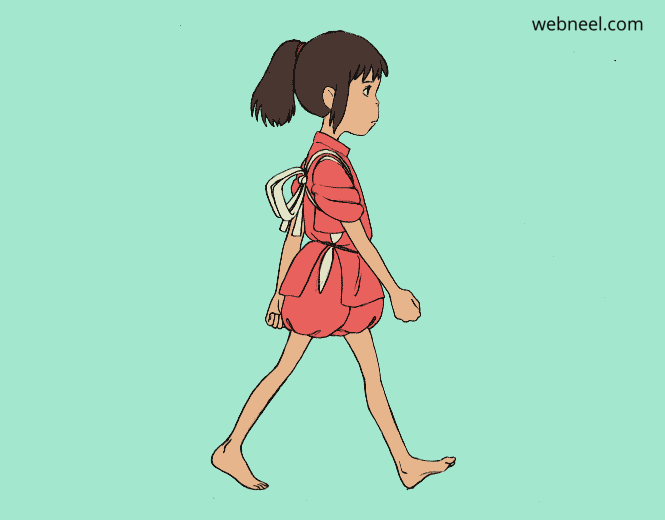
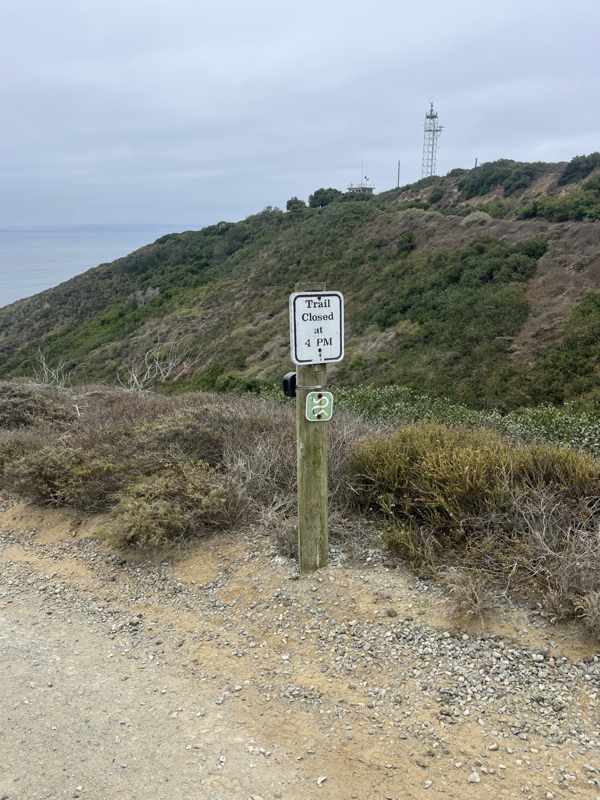
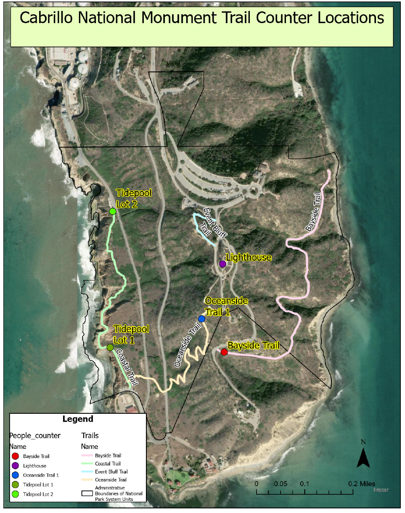
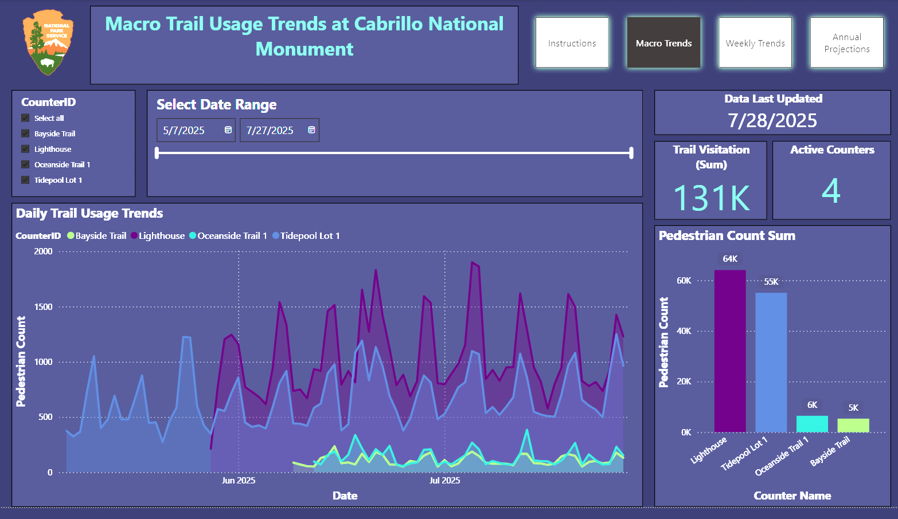
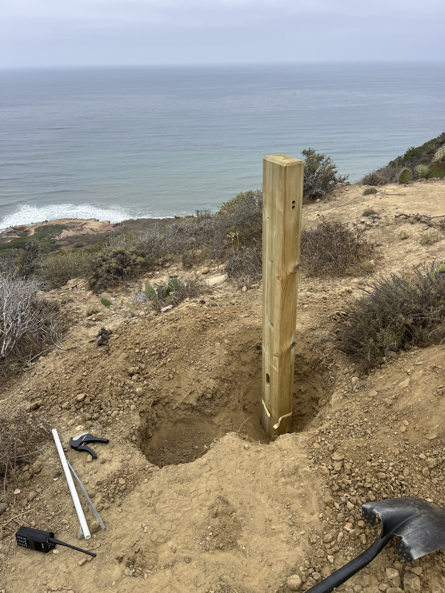

Cabrillo National Monument
People Counter Project
Power BI Dashboard Overview
Taro Katayama
Date: 08/04/2025

Why Count People?
We currently lack
precise data
on trail and site usage
Visitation patterns are unclear:
How many?
When?
Where?
Accurate data is crucial for:
Funding proposals
Operational planning
Trail and facility management

Project Overview
Goal:
Estimate park usage with automated people counters
Scope:
Coastal trail, Lighthouse, Bayside trail, Oceanside trail
Data:
Collected continuously
Aggregated for easy analysis
Tool:
Power BI dashboard for visualization

How the System Works
📊
1. People Counter Detects
→
📋
2. Data Collection
→
☁️
3. Eco-Visio Upload
💾
4. Download Data
←
⚙️
5. Run R Code
←
📈
6. Dashboard Refresh
Dashboard Highlights
See visitor trends by
day, week, month
Identify peak times and usage patterns
Compare usage across different trails/areas
Exportable data for reports and proposals

Next Steps
Expand counter coverage to
more areas
Refine dashboard based on team feedback
Automate reporting for proposals and planning
Writing yearly summary report
Make dashboard available to you all

Thank You
Questions?
Your feedback is valuable—let's make this tool work for you!
1
/
8
← Previous
Next →